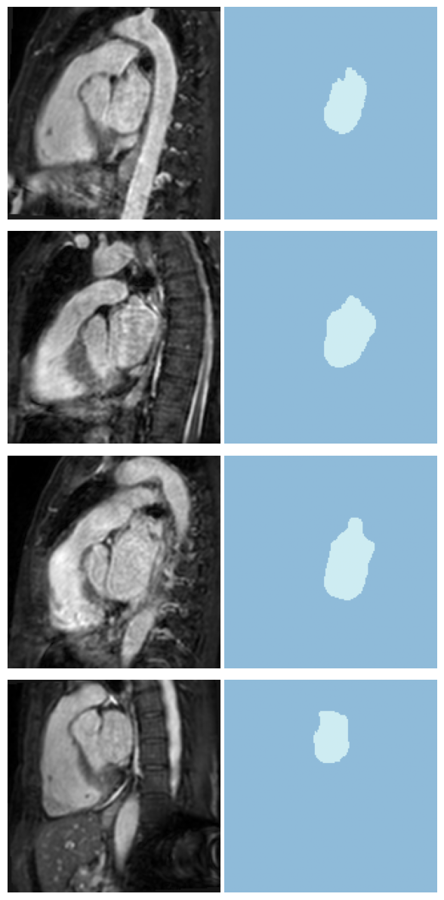

from fastMONAI.vision_all import *
from monai.apps import DecathlonDataset
from sklearn.model_selection import train_test_splitBinary semantic segmentation
Image segmentation, or semantic segmentation, is the task of classifying each pixel within an image with a corresponding class.

Download external data
We use the MONAI function DecathlonDataset to download the data and generate items for training.
path = Path('../data')
path.mkdir(exist_ok=True)task = "Task02_Heart"
training_data = DecathlonDataset(root_dir=path, task=task, section="training",
download=True, cache_num=0, num_workers=3)2025-08-29 12:59:55,613 - INFO - Verified 'Task02_Heart.tar', md5: 06ee59366e1e5124267b774dbd654057.
2025-08-29 12:59:55,613 - INFO - File exists: ../data/Task02_Heart.tar, skipped downloading.
2025-08-29 12:59:55,614 - INFO - Non-empty folder exists in ../data/Task02_Heart, skipped extracting.df = pd.DataFrame(training_data.data)
df.shape(16, 2)Split the labled data into training and test
train_df, test_df = train_test_split(df, test_size=0.1, random_state=42)
train_df.shape, test_df.shape((14, 2), (2, 2))Look at training data
Each class label will be counted for the masks (including the background) if you pass in the mask path and define the dtype to be MedMask in MedDataset
med_dataset = MedDataset(img_list=train_df.label.tolist(), dtype=MedMask, max_workers=12)med_dataset.df.head()| path | dim_0 | dim_1 | dim_2 | voxel_0 | voxel_1 | voxel_2 | orientation | voxel_count_0 | voxel_count_1 | |
|---|---|---|---|---|---|---|---|---|---|---|
| 0 | ../data/Task02_Heart/labelsTr/la_023.nii.gz | 320 | 320 | 110 | 1.25 | 1.25 | 1.37 | RAS+ | 11220796 | 43204 |
| 1 | ../data/Task02_Heart/labelsTr/la_004.nii.gz | 320 | 320 | 110 | 1.25 | 1.25 | 1.37 | RAS+ | 11205525 | 58475 |
| 2 | ../data/Task02_Heart/labelsTr/la_007.nii.gz | 320 | 320 | 130 | 1.25 | 1.25 | 1.37 | RAS+ | 13256556 | 55444 |
| 3 | ../data/Task02_Heart/labelsTr/la_022.nii.gz | 320 | 320 | 110 | 1.25 | 1.25 | 1.37 | RAS+ | 11230449 | 33551 |
| 4 | ../data/Task02_Heart/labelsTr/la_011.nii.gz | 320 | 320 | 120 | 1.25 | 1.25 | 1.37 | RAS+ | 12229545 | 58455 |
data_info_df = med_dataset.summary()data_info_df.head()| dim_0 | dim_1 | dim_2 | voxel_0 | voxel_1 | voxel_2 | orientation | example_path | total | |
|---|---|---|---|---|---|---|---|---|---|
| 3 | 320 | 320 | 110 | 1.25 | 1.25 | 1.37 | RAS+ | ../data/Task02_Heart/labelsTr/la_004.nii.gz | 4 |
| 4 | 320 | 320 | 120 | 1.25 | 1.25 | 1.37 | RAS+ | ../data/Task02_Heart/labelsTr/la_005.nii.gz | 4 |
| 1 | 320 | 320 | 100 | 1.25 | 1.25 | 1.37 | RAS+ | ../data/Task02_Heart/labelsTr/la_009.nii.gz | 2 |
| 2 | 320 | 320 | 109 | 1.25 | 1.25 | 1.37 | RAS+ | ../data/Task02_Heart/labelsTr/la_029.nii.gz | 1 |
| 0 | 320 | 320 | 90 | 1.25 | 1.25 | 1.37 | RAS+ | ../data/Task02_Heart/labelsTr/la_016.nii.gz | 1 |
resample, reorder = med_dataset.suggestion()
resample, reorder([1.25, 1.25, 1.37], False)bs=4img_size = med_dataset.get_largest_img_size(resample=resample)
img_size[320.0, 320.0, 130.0]size = [160,160,128]item_tfms = [ZNormalization(), PadOrCrop(size), RandomAffine(scales=0, degrees=5)] # RandomMotion()dblock = MedDataBlock(blocks=(ImageBlock(cls=MedImage), MedMaskBlock),
splitter=RandomSplitter(valid_pct=0.1, seed=42), # By passing valid_pct=0.1, we tell it to get a random 10% of the training set for validation.
get_x=ColReader('image'),
get_y=ColReader('label'),
item_tfms=item_tfms,
reorder=reorder,
resample=resample)dls = dblock.dataloaders(train_df, bs=bs)# training and validation
len(dls.train_ds.items), len(dls.valid_ds.items)(13, 1)dls.show_batch(anatomical_plane=2)
Create and train a 3D model
The current state-of-the-art CNN models for medical image segmentation tasks are based on encoder-decoder architectures like the U-Net. In the following line, we import an enhanced version of 3D UNet from MONAI. In addition, we import the Dice coefficient (Dice) loss, a commonly used loss function in medical image segmentation tasks: \[\begin{equation*} \begin{aligned} loss = 1- \frac{y \cap \hat{y}}{\left | y \right |+\left | \hat{y} \right |} \end{aligned} \end{equation*}\]
from monai.networks.nets import UNet
from monai.losses import DiceLossmonai_model = UNet(spatial_dims=3, in_channels=1, out_channels=1, channels=(16, 32, 64, 128, 256),strides=(2, 2, 2, 2), num_res_units=2)
pytorch_model = monai_model.modelloss_func = CustomLoss(loss_func=DiceLoss(sigmoid=True))We use a built-in ranger optimizer from fastai, that combines (RAdam + Lookahead) into a single optimizer. Ranger21 tested with fastai available: https://github.com/lessw2020/Ranger21
learn = Learner(dls, pytorch_model, loss_func=loss_func, opt_func=ranger, metrics=binary_dice_score)learn.lr_find()
0.00% [0/34 00:00<?]
0.00% [0/3 00:00<?]
SuggestedLRs(valley=0.007585775572806597)lr = 1e-2As shown in https://walkwithfastai.com/Segmentation, with the ranger optimizer, we want to use a different fit function, called fit_flat_cos
import mlflow
# Set experiment name
mlflow.set_experiment(task)
mlflow_callback = ModelTrackingCallback(
model_name=f"{task}_{monai_model._get_name()}",
loss_function=loss_func.loss_func._get_name(),
item_tfms=item_tfms,
size=size,
resample=resample,
reorder=reorder,
)
with mlflow.start_run(run_name="initial_training"):
learn.fit_flat_cos(200, lr, cbs=[mlflow_callback])learn.recorder.plot_loss();learn.save('heart-weights')Path('models/heart-weights.pth')learn.show_results(anatomical_plane=1)mlflow_ui = MLflowUIManager()
mlflow_ui.start_ui()TrueTest data (with labels to evaulate the model)
Evaluate the performance of the selected model on unseen data. It’s important to not touch this data until you have fine tuned your model to get an unbiased evaluation!
learn.load('heart-weights');test_dl = learn.dls.test_dl(test_df,with_labels=True)test_dl.show_batch(anatomical_plane=0, figsize=(10,10))pred_acts, labels = learn.get_preds(dl=test_dl)
pred_acts.shape, labels.shape(torch.Size([2, 1, 160, 160, 128]), torch.Size([2, 1, 160, 160, 128]))binary_dice_score(pred_acts, labels)tensor(0.9120)learn.show_results(anatomical_plane=0, dl=test_dl)mlflow_ui.stop()
🛑 MLflow UI stopped